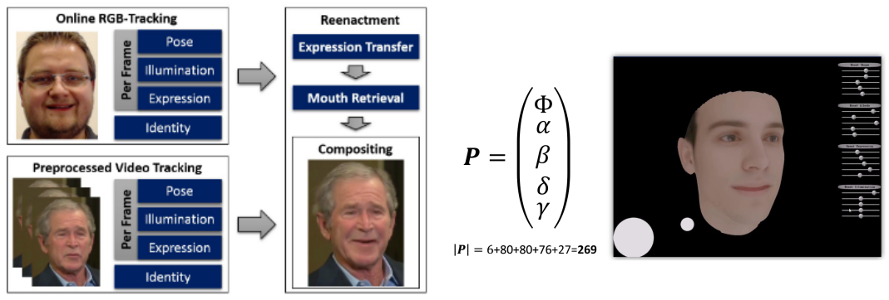
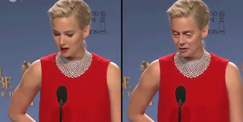
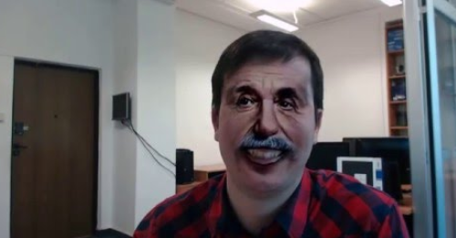
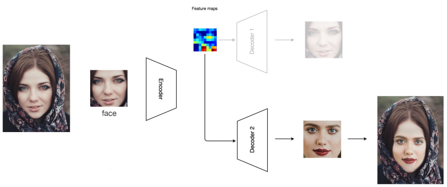
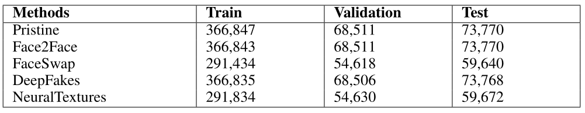
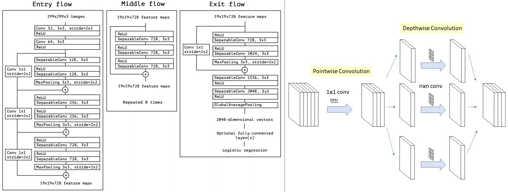
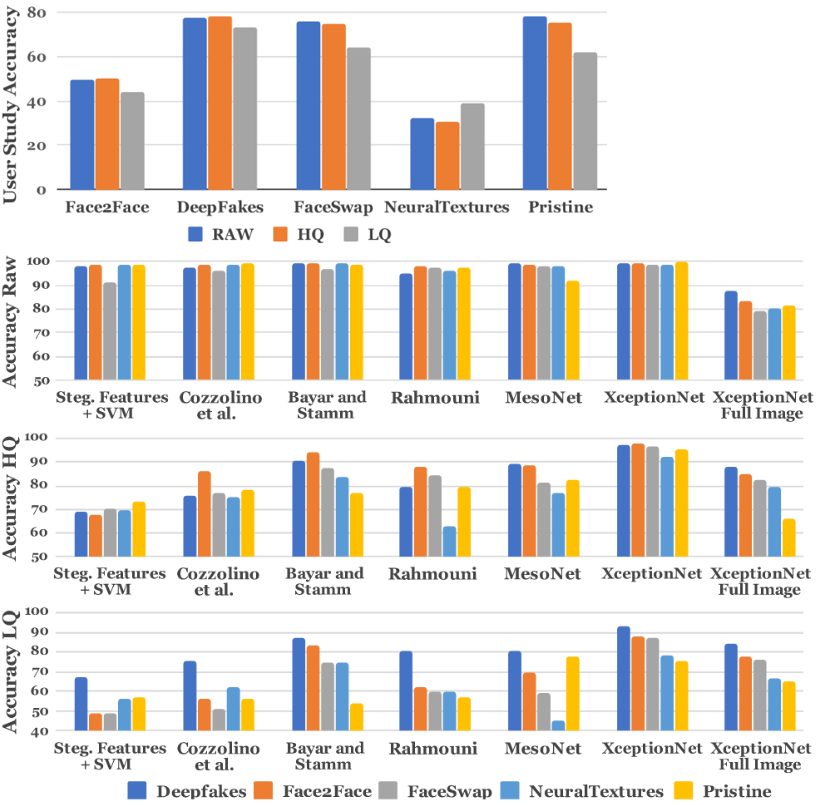
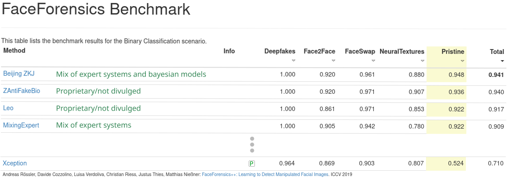
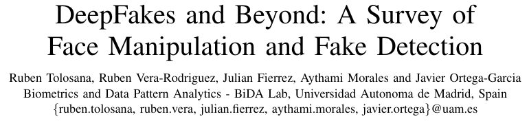

class: center, middle, title-slide count: false ## <b>FaceForensics++: Learning to Detect Manipulated Facial Images</b><br/><sub>A 2019 paper by A. Rössler et al. (arXiv:1901.08971)</sub> ### Presented by Q. Le Roux (github@qlero) <br/> .less-line-height[ .grey[Université Côte d'Azur] ] --- # A Rising Concern ``` facial expression manipulation + facial identity manipulation + ubiquitous neural networks ------------------------------- significant concern for society (political, economic, societal) ``` <center><img src="images/putin.gif" width="45%" /></center> .font50[ **Source**: `Kim, H. et al. Deep video portraits. ACM Trans. Graph. (TOG) 2018` ] --- class: center, middle, title-slide ## Developing detection techniques has become one of the cornerstones of the field of Computer Vision in recent years. --- # The Paper's Motivation <br/> .font90[ > To expand a previous 2018 paper (arXiv:1803.09179) > To test the efficacy of state-of-the-art image manipulation and detection > To standardize the evaluation of detection methods ] --- class: center, middle, title-slide # 🧮 Techniques & State-of-the-Art --- # Advances in Facial Digitization <br/> New techniques, better computers enable facial digitization in two different approaches: - **Graphics-based**: Relies on expert-selected features and patterns - **Learning-based**: Relies on neural networks --- # An Overall Generic Process <small>The two approaches follow the same pipeline: 1. Identify the face region and isolate/extract it 2. Modify the region and recombine This process usually leaves artifacts, which detection systems might look for.</small> <center><img src="images/process.png" width=100%/></center> --- # Facial Forgery Methods <br> Two categories of forgeries are identified at the time of publication: <br><br> - Expression Manipulations - Identity Manipulations --- # Expression Manipulation <small> State-of-the-art in early 2019: - Graphics appr.: **Face2Face**, `Thies et al., 2016` - Learning appr.: **NeuralTextures**, `Thies et al., 2019` </small> <center></center> <br/> .font50[ **Sources**: `Thies, J. et al. Face2Face: Real-Time Face Capture & Reenactment. IEEE. 2016; Thies, J. et al. Deffered Neural Rendering. ACM Trans. Graph. (TOG) 2019` ] --- # Face2Face .font70[ F2F is a **parametric** face model with six classes of parameters: - Pose, shape, albedo, expression, illumination (269 parameters) The transfer relies on an iterative least squares to smooth the recomputed face. ] <center></center> .font50[ **Note**: The mouth is not parametrized but pulled from a database created from the target video. The mouth is composed over the resulting transfer, and completed with a kNN to match source and target (especially for the interior). ] --- # Neural Textures .font90[ Neural Textures is an **extension of Face2Face** to track and generate facial features. <br/><br/><br/> The learning approach revolves around using **Generative Adversarial Network** to compute the mouth area. **Goal**: to reduce the computational complexity of relying on a database ] --- # Identity Manipulation <small> State-of-the-art in early 2019: - Graphics appr.: **FaceSwap**, `Kowalski, 2016` - Learning appr.: **DeepFakes**, `deepfakes, 2017` </small> <center></center> <br/><br/> .font50[ **Sources**: `Kowalski, FaceSwap. GitHub. 2015; Deepfakes Gr., deepfakes. GitHub. 2016` ] --- # FaceSwap .font70[ FaceSwap computes the **landmarks** of an input face (extracted from the input image) and **fit a 3D model to the landmarks**. <br/><br/> A facial 3D model (from an input facial image) is fitted then projected onto the target using a **Gauss-Newton method**. The method minimizes the differences between the projected shape and the detected landmarks. <br/><br/> A smoothing step is then performed. ] <center></center> --- # DeepFakes .font70[ DeepFakes relies an an **AutoEncoder** network to learn face feature maps. Two are used: one for the source and one of the target. <br/> **The encoder of the source is combined with the decoder of the target**. The result is a reconstruction of the original data of the target with a face manipulated insertion. ] <center></center> .font50[ **Source**: ``Hui, J., How Deep Learning Fakes Videos and How to Detect It? Medium, 2018`` ] --- class: center, middle, title-slide # 🗄️ The Paper's Approach --- # The Authors' Objectives <small>Beyond motivations, the authors set out to publish: 1. A large scale dataset to standardize the industry 2. A state-of-the-art forgery detector 3. An automated benchmark with a human baseline <u>Overarching goal:</u> **<center>To thoroughly test the state-of-the-art of facial forgeries</center>** </small> --- # The FaceForensics++ Dataset <small>An order of magnitude larger than previous ones: > **5000+ videos of 270+ image frame each in 3 different compression format** | Source | <div style="width:200px"># of videos</div> | <div style="width:200px">Compression</div> | | ----------------: | ----: | ----------: | | Original YouTube + actors | 1,000 + 360 | raw, HQ, LQ | | DeepFakes | 1,000 | raw, HQ, LQ | | Face2Face | 1,000 | raw, HQ, LQ | | FaceSwap | 1,000 | raw, HQ, LQ | | NeuralTextures | 1,000 | raw, HQ, LQ | </small> <br/> .font50[ **Note**: The dataset amounts to c. 1.8m images. HQ and LQ corresponds to levels of "constant rate quantization" compression, resp. 23 and 40. ] --- # An Expanding Dataset .font70[ Since the inception of the paper, the dataset was updated twice to include: | Source | <div style="width:180px"># of videos</div> | <div style="width:170px">Compression</div> | <div style="width:150px">Added Date</div> | | ----------------: | ----: | ----------: | ---: | | DeepFakeDetection | 3,000 | raw, HQ, LQ | late 2019 | | FaceShifter | 1,000 | raw, HQ, LQ | 2020 | DFD relies on different deepfake methods available online at the time of publication (NeurIPS 2019). Face Shifter is based on an auto-encoder.]<br/> .font50[ **Sources**: `Dufour et al. Deep Fake Detection Dataset. Google AI. 2019; Li et al. FaceShifter: Towards High Fidelity And Occlusion Aware Face Swapping. CVPR. 2020` ] --- # Problem Statement To Evaluate FF++ .font70[**Human observer baseline**: - 50:50 split between pristine and fake images - 60 images per observer with an viewing time limit up to 6 seconds **Problem statement for automated solution**: - 720/140/140 video split for training, val. and test. - per-frame binary classification, videos converted to images s.t.: ] <center></center> --- # Xception, the then-best detector <small> Introduced in 2017, Xception stands for "Extreme-Inception". It is a set of deep and parallel (*depthwise separable*) CNN classifier. </small> <center></center> .font50[ **Source**: `Chollet F., Xception: DL with Depthwise Separable Convolutions. CVPR. 2017;Kaggle Leaf Disease challenge; Maël F., Xception Model, Github` ] --- # The FaceForensics++ Benchmark .font70[ The benchmark corresponds to **1,000 images** with unknown labels: - **Single frame** from an **unknown video** - Manipulated with **DeepFakes**, **Face2Face**, **FaceSwap**, or **NeuralTextures** - With random **re-sizing** and **compression** The automated benchmark is a **website** allowing one submission (e.g. **.JSON file of label predictions**) submission **every 2 weeks**. ] <center><img src="images/benchpics.jpg" width = "80%"/></center> --- class: center, middle, title-slide # 🧱 Performance & Limitations --- # Paper results <center>.font70[ The lower the video quality, the lower the performance. <center></center> ]</center> .font60[ - XceptionNet results obtained via training on 270 images per video, testing on 100 images per video. - <u>Methods:</u> **Cozzolino**, steganographic features + CNN; **Bayar and Stamm**, CNN followed by three FC layers; **Rahmouni**, CNN with a focus on extracting features via global pooling; **MesoNet**, InceptionNet architecture - Humans perform with an average accuracy between 68.7% and 58.7% ] --- # Current Benchmark Leaderboard .font80[Performance has greatly increased in a few years. ] <center></center> <center><img src="images/repo.png" width = "60%"/></center> --- # Limitations .font60[ *<center>"Early experiments with all methods showed that the target face had to be nearly front-facing to prevent the manipulation methods from failing or produce strong artifacts [...] a manual screening [was performed] to ensure a high-quality video selection and avoid face occlusions."</center>* - The dataset will have to be replaced or expanded with newer, better methods (no update since 2020) - The Benchmark has nearly been perfected and will likely need an update as well (not yet updated with DFD or FaceShifter) - The paper does not provide their training code to verify the Xception performance, the benchmark does not need to disclose the used architecture's code. The milieu is a bit opaque from an industry perspective. - Performance relies on face isolation as whole-image classification is poorly handled still ] --- class: center, middle, title-slide # 🌐 Future Directions --- # New Generation Methods .font60[ The split between expression and identity manipulation has been refined. | <div style="width:250px">Manipulation</div> | <div style="width:250px">Current Main Method(s)</div> | <div style="width:200px">Examples</div> | | ---: | ---: | ---: | | Entire face synthesis | GAN | ProGAN, StyleGAN | | Identity Swap | AutoEncoder | Celeb-DF | | Attribute Manipulation | GAN | STGAN, EigenGAN, PAGAN, StarGAN | | Expression Swap | Parametric, GAN | Face2Face, NeuralTextures | | Face Morphing | Parametric | FaceMorpher, WinMorph, FantaMorph | | Face De-Identification | GAN | Semi-AN | ] <br/> .font50[ **Source**: `Tolosana et al. DeepFakes and Beyond: A Survey of Face Manipulation and Fake Detection. ArXiV. 2020` ] --- # New Detection Methods .font60[ | <div style="width:250px">Manipulation</div> | <div style="width:300px">Current Main Method(s)</div> | <div style="width:200px">Database</div> | | ---: | ---: | ---: | | Entire face synthesis | GAN/DL-pipeline Feature + SVM/CNN | DFDD, 100k-Faces, iFakeFaceDB | | Identity Swap | Feature-Extraction + SVM/CNN | FF++, DFDC, DeepfakeTIMIT | | Attribute Manipulation | GAN/DL-pipeline Feature + CNN/SVM | DFDD, proprietary | | Expression Swap | Feature-Extract./DL-pipeline F + CNN/AE | FF++ | | Face Morphing | Feature-Extraction + Classifier | D-MAD, S-MAD | ] <br/><br/> .font50[ **Source**: `Tolosana et al. DeepFakes and Beyond: A Survey of Face Manipulation and Fake Detection. ArXiV. 2020; Raja et al. Morphing ATtack Detection-Database. IEEE. 2021` ] --- # Further Sources On The Topic .font60[ **Paper:** <center></center> <br/> **Github repositories**: - StyleGAN, 2019, [https://github.com/NVlabs/stylegan](https://github.com/NVlabs/stylegan) - StarGANv2, 2020, [https://github.com/clovaai/stargan-v2](https://github.com/clovaai/stargan-v2) - STGAN, 2020, [https://github.com/csmliu/STGAN](https://github.com/csmliu/STGAN) - PAGAN, 2020, [https://github.com/LynnHo/PA-GAN-Tensorflow](https://github.com/LynnHo/PA-GAN-Tensorflow) - EigenGAN, ICCV 2021, [https://github.com/LynnHo/EigenGAN-Tensorflow](https://github.com/LynnHo/EigenGAN-Tensorflow) ] --- # Code Reimplementation .font60[ A GitHub repository is available publicly with the following content: - FaceForensics++ code reimplementation (test step on videos foreign to the dataset) - ResNet50 implementation (achieves a validation accuracy of 89% after 10 epochs on a dataset subset) - ResNet50 with Scattering Transforms - Presentation slides (html+css code) - Suite of README.md and shell script to rework the paper from a to z > [https://github.com/qlero/faceforensics_reimplementation](https://github.com/qlero/faceforensics_reimplementation) ] --- # To Wrap Up: A Bit of Fun <center><video width="600" height="400" controls="controls"> <source src="videos/notMorganCrossfade.mp4" type="video/mp4"> </video></center> .font50[ **Source**: `de Jong, B., Schouwink, B., Deepfake Singularity. 2021.` <small>([link](https://www.youtube.com/watch?v=F4G6GNFz0O8))</small> ] --- class: center, middle, title-slide # 🤩 It's been a pleasure ## Ask me questions!